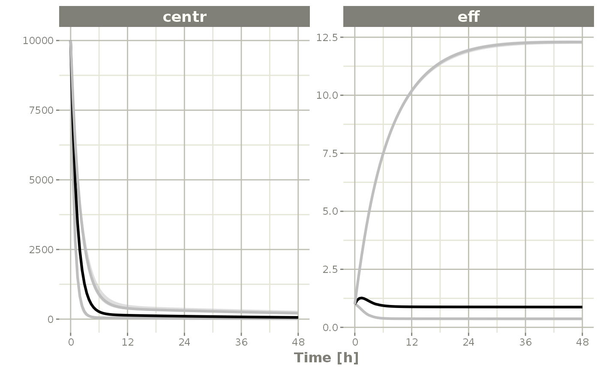
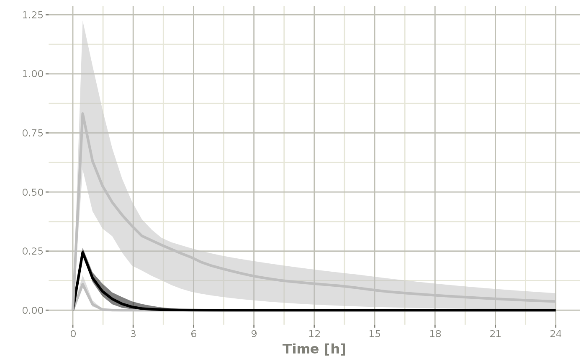
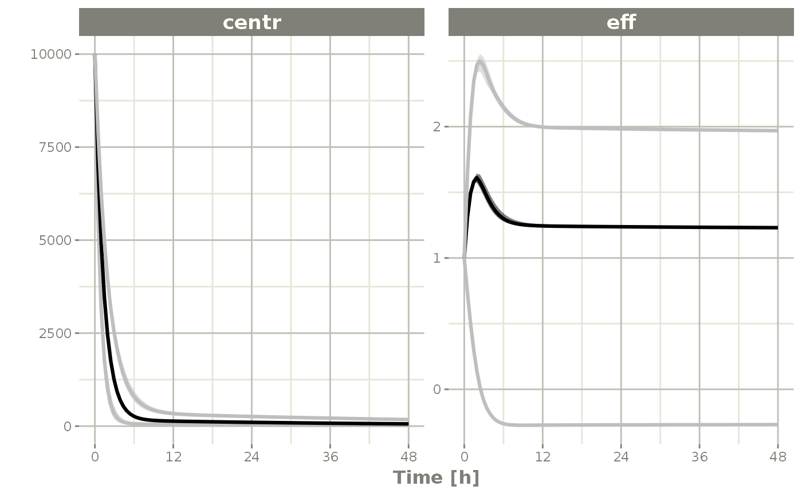

![RxODE]()
Population Simulations with RxODE
Simulation of Variability with RxODE
In pharmacometrics the nonlinear-mixed effect modeling software (like nlmixr) characterizes the between-subject variability. With this between subject variability you can simulate new subjects.
Assuming that you have a 2-compartment, indirect response model, you can set create an RxODE model describing this system below:
Setting up the RxODE model
library(RxODE)
#> RxODE 1.1.0 using 1 threads (see ?getRxThreads)
#> no cache: create with `rxCreateCache()`
set.seed(32)
rxSetSeed(32)
mod <- RxODE({
eff(0) = 1
C2 = centr/V2*(1+prop.err);
C3 = peri/V3;
CL = TCl*exp(eta.Cl) ## This is coded as a variable in the model
d/dt(depot) =-KA*depot;
d/dt(centr) = KA*depot - CL*C2 - Q*C2 + Q*C3;
d/dt(peri) = Q*C2 - Q*C3;
d/dt(eff) = Kin - Kout*(1-C2/(EC50+C2))*eff;
})Adding the parameter estimates
The next step is to get the parameters into R so that you can start the simulation:
theta <- c(KA=2.94E-01, TCl=1.86E+01, V2=4.02E+01, # central
Q=1.05E+01, V3=2.97E+02, # peripheral
Kin=1, Kout=1, EC50=200, prop.err=0) # effectsIn this case, I use lotri to specify the omega since it uses similar lower-triangular matrix specification as nlmixr (also similar to NONMEM):
## the column names of the omega matrix need to match the parameters specified by RxODE
omega <- lotri(eta.Cl ~ 0.4^2)
omega
#> eta.Cl
#> eta.Cl 0.16Simulating
The next step to simulate is to create the dosing regimen for overall simulation:
If you wish, you can also add sampling times (though now RxODE can fill these in for you):
Note the et takes similar arguments as seq when adding sampling times. There are more methods to adding sampling times and events to make complex dosing regimens (See the event vignette). This includes ways to add variability to the both the sampling and dosing times).
Once this is complete you can simulate using the rxSolve routine:
sim <- rxSolve(mod,theta,ev,omega=omega,nSub=100)To quickly look and customize your simulation you use the default plot routine. Since this is an RxODE object, it will create a ggplot2 object that you can modify as you wish. The extra parameter to the plot tells RxODE/R what piece of information you are interested in plotting. In this case, we are interested in looking at the derived parameter C2:
Checking the simulation with plot
library(ggplot2)
## The plots from RxODE are ggplots so they can be modified with
## standard ggplot commands.
plot(sim, C2, log="y") +
ylab("Central Compartment")
#> Warning: `guides(<scale> = FALSE)` is deprecated. Please use `guides(<scale> =
#> "none")` instead.
Of course this additional parameter could also be a state value, like eff:
## They also takes many of the standard plot arguments; See ?plot
plot(sim, eff, ylab="Effect")
#> Warning: `guides(<scale> = FALSE)` is deprecated. Please use `guides(<scale> =
#> "none")` instead.
Or you could even look at the two side-by-side:
plot(sim, C2, eff)
#> Warning: `guides(<scale> = FALSE)` is deprecated. Please use `guides(<scale> =
#> "none")` instead.
Or stack them with patchwork
library(patchwork)
plot(sim, C2, log="y") / plot(sim, eff)
#> Warning: `guides(<scale> = FALSE)` is deprecated. Please use `guides(<scale> =
#> "none")` instead.
#> Warning: `guides(<scale> = FALSE)` is deprecated. Please use `guides(<scale> =
#> "none")` instead.
Processing the data to create summary plots
Usually in pharmacometric simulations it is not enough to simply simulate the system. We have to do something easier to digest, like look at the central and extreme tendencies of the simulation.
Since the RxODE solve object is a type of data frame
It is now straightforward to perform calculations and generate plots with the simulated data. You can
Below, the 5th, 50th, and 95th percentiles of the simulated data are plotted.
confint(sim, "C2", level=0.95) %>%
plot(ylab="Central Concentration", log="y")
#> ! in order to put confidence bands around the intervals, you need at least 2500 simulations
#> summarizing data...done
confint(sim, "eff", level=0.95) %>%
plot(ylab="Effect")
#> ! in order to put confidence bands around the intervals, you need at least 2500 simulations
#> summarizing data...done
Note that you can see the parameters that were simulated for the example
head(sim$param)
#> sim.id V2 prop.err V3 TCl eta.Cl KA Q Kin Kout EC50
#> 1 1 40.2 0 297 18.6 0.1886912 0.294 10.5 1 1 200
#> 2 2 40.2 0 297 18.6 -0.1492457 0.294 10.5 1 1 200
#> 3 3 40.2 0 297 18.6 0.5075745 0.294 10.5 1 1 200
#> 4 4 40.2 0 297 18.6 0.3819285 0.294 10.5 1 1 200
#> 5 5 40.2 0 297 18.6 0.1262516 0.294 10.5 1 1 200
#> 6 6 40.2 0 297 18.6 0.1721206 0.294 10.5 1 1 200Simulation of unexplained variability (sigma)
In addition to conveniently simulating between subject variability, you can also easily simulate unexplained variability.
mod <- RxODE({
eff(0) = 1
C2 = centr/V2;
C3 = peri/V3;
CL = TCl*exp(eta.Cl) ## This is coded as a variable in the model
d/dt(depot) =-KA*depot;
d/dt(centr) = KA*depot - CL*C2 - Q*C2 + Q*C3;
d/dt(peri) = Q*C2 - Q*C3;
d/dt(eff) = Kin - Kout*(1-C2/(EC50+C2))*eff;
e = eff+eff.err
cp = centr*(1+cp.err)
})
theta <- c(KA=2.94E-01, TCl=1.86E+01, V2=4.02E+01, # central
Q=1.05E+01, V3=2.97E+02, # peripheral
Kin=1, Kout=1, EC50=200) # effects
sigma <- lotri(eff.err ~ 0.1, cp.err ~ 0.1)
sim <- rxSolve(mod, theta, ev, omega=omega, nSub=100, sigma=sigma)
s <- confint(sim, c("eff", "centr"));
#> ! in order to put confidence bands around the intervals, you need at least 2500 simulations
#> summarizing data...done
plot(s)
Simulation of Individuals
Sometimes you may want to match the dosing and observations of individuals in a clinical trial. To do this you will have to create a data.frame using the RxODE event specification as well as an ID column to indicate an individual. The RxODE event vignette talks more about how these datasets should be created.
library(dplyr)
#>
#> Attaching package: 'dplyr'
#> The following objects are masked from 'package:stats':
#>
#> filter, lag
#> The following objects are masked from 'package:base':
#>
#> intersect, setdiff, setequal, union
ev1 <- eventTable(amount.units="mg", time.units="hours") %>%
add.dosing(dose=10000, nbr.doses=1, dosing.to=2) %>%
add.sampling(seq(0,48,length.out=10));
ev2 <- eventTable(amount.units="mg", time.units="hours") %>%
add.dosing(dose=5000, nbr.doses=1, dosing.to=2) %>%
add.sampling(seq(0,48,length.out=8));
dat <- rbind(data.frame(ID=1, ev1$get.EventTable()),
data.frame(ID=2, ev2$get.EventTable()))
## Note the number of subject is not needed since it is determined by the data
sim <- rxSolve(mod, theta, dat, omega=omega, sigma=sigma)
sim %>% select(id, time, e, cp)
#> id time e cp
#> 1 1 0.000000 [h] 1.0704873 6088.682408
#> 2 1 5.333333 [h] 1.4161832 195.326087
#> 3 1 10.666667 [h] 1.1577243 71.657674
#> 4 1 16.000000 [h] 1.5530452 55.718881
#> 5 1 21.333333 [h] 0.6095692 79.788997
#> 6 1 26.666667 [h] 1.0198489 87.860527
#> 7 1 32.000000 [h] 1.3936163 6.063889
#> 8 1 37.333333 [h] 1.5462477 47.825627
#> 9 1 42.666667 [h] 0.9646993 34.477631
#> 10 1 48.000000 [h] 0.7520603 57.685566
#> 11 2 0.000000 [h] 1.2096424 3806.329387
#> 12 2 6.857143 [h] 1.0133905 91.404578
#> 13 2 13.714286 [h] 0.7185334 43.293896
#> 14 2 20.571429 [h] 1.0589584 44.864883
#> 15 2 27.428571 [h] 1.0806704 27.278484
#> 16 2 34.285714 [h] 1.0580734 18.125166
#> 17 2 41.142857 [h] 0.7148149 16.826759
#> 18 2 48.000000 [h] 0.8196009 16.593307Simulation of Clinical Trials
By either using a simple single event table, or data from a clinical trial as described above, a complete clinical trial simulation can be performed.
Typically in clinical trial simulations you want to account for the uncertainty in the fixed parameter estimates, and even the uncertainty in both your between subject variability as well as the unexplained variability.
RxODE allows you to account for these uncertainties by simulating multiple virtual “studies,†specified by the parameter nStud. Each of these studies samples a realization of fixed effect parameters and covariance matrices for the between subject variability(omega) and unexplained variabilities (sigma). Depending on the information you have from the models, there are a few strategies for simulating a realization of the omega and sigma matrices.
The first strategy occurs when either there is not any standard errors for standard deviations (or related parameters), or there is a modeled correlation in the model you are simulating from. In that case the suggested strategy is to use the inverse Wishart (parameterized to scale to the conjugate prior)/scaled inverse chi distribution. this approach uses a single parameter to inform the variability of the covariance matrix sampled (the degrees of freedom).
The second strategy occurs if you have standard errors on the variance/standard deviation with no modeled correlations in the covariance matrix. In this approach you perform separate simulations for the standard deviations and the correlation matrix. First you simulate the variance/standard deviation components in the thetaMat multivariate normal simulation. After simulation and transformation to standard deviations, a correlation matrix is simulated using the degrees of freedom of your covariance matrix. Combining the simulated standard deviation with the simulated correlation matrix will give a simulated covariance matrix. For smaller dimension covariance matrices (dimension < 10x10) it is recommended you use the lkj distribution to simulate the correlation matrix. For higher dimension covariance matrices it is suggested you use the inverse wishart distribution (transformed to a correlation matrix) for the simulations.
The covariance/variance prior is simulated from RxODEs cvPost() function.
Simulation from inverse Wishart correlations
An example of this simulation is below:
## Creating covariance matrix
tmp <- matrix(rnorm(8^2), 8, 8)
tMat <- tcrossprod(tmp, tmp) / (8 ^ 2)
dimnames(tMat) <- list(NULL, names(theta))
sim <- rxSolve(mod, theta, ev, omega=omega, nSub=100, sigma=sigma, thetaMat=tMat, nStud=10,
dfSub=10, dfObs=100)
s <-sim %>% confint(c("centr", "eff"))
#> summarizing data...done
plot(s)
If you wish you can see what omega and sigma was used for each virtual study by accessing them in the solved data object with $omega.list and $sigma.list:
head(sim$omega.list)
#> [[1]]
#> [,1]
#> [1,] 0.1676778
#>
#> [[2]]
#> [,1]
#> [1,] 0.2917085
#>
#> [[3]]
#> [,1]
#> [1,] 0.1776813
#>
#> [[4]]
#> [,1]
#> [1,] 0.1578682
#>
#> [[5]]
#> [,1]
#> [1,] 0.1845614
#>
#> [[6]]
#> [,1]
#> [1,] 0.3282268
head(sim$sigma.list)
#> [[1]]
#> [,1] [,2]
#> [1,] 0.112416983 0.004197039
#> [2,] 0.004197039 0.097293971
#>
#> [[2]]
#> [,1] [,2]
#> [1,] 0.084311199 -0.006277998
#> [2,] -0.006277998 0.122140938
#>
#> [[3]]
#> [,1] [,2]
#> [1,] 0.09834771 0.01060251
#> [2,] 0.01060251 0.10024751
#>
#> [[4]]
#> [,1] [,2]
#> [1,] 0.125556975 0.007690868
#> [2,] 0.007690868 0.090991261
#>
#> [[5]]
#> [,1] [,2]
#> [1,] 0.1116261 -0.0184748
#> [2,] -0.0184748 0.1320288
#>
#> [[6]]
#> [,1] [,2]
#> [1,] 0.093539238 0.007270049
#> [2,] 0.007270049 0.098648424You can also see the parameter realizations from the $params data frame.
Simulate using variance/standard deviation standard errors
Lets assume we wish to simulate from the nonmem run included in xpose
First we setup the model:
rx1 <- RxODE({
cl <- tcl*(1+crcl.cl*(CLCR-65)) * exp(eta.cl)
v <- tv * WT * exp(eta.v)
ka <- tka * exp(eta.ka)
ipred <- linCmt()
obs <- ipred * (1 + prop.sd) + add.sd
})Next we input the estimated parameters:
theta <- c(tcl=2.63E+01, tv=1.35E+00, tka=4.20E+00, tlag=2.08E-01,
prop.sd=2.05E-01, add.sd=1.06E-02, crcl.cl=7.17E-03,
## Note that since we are using the separation strategy the ETA variances are here too
eta.cl=7.30E-02, eta.v=3.80E-02, eta.ka=1.91E+00)And also their covariances; To me, the easiest way to create a named covariance matrix is to use lotri():
thetaMat <- lotri(
tcl + tv + tka + tlag + prop.sd + add.sd + crcl.cl + eta.cl + eta.v + eta.ka ~
c(7.95E-01,
2.05E-02, 1.92E-03,
7.22E-02, -8.30E-03, 6.55E-01,
-3.45E-03, -6.42E-05, 3.22E-03, 2.47E-04,
8.71E-04, 2.53E-04, -4.71E-03, -5.79E-05, 5.04E-04,
6.30E-04, -3.17E-06, -6.52E-04, -1.53E-05, -3.14E-05, 1.34E-05,
-3.30E-04, 5.46E-06, -3.15E-04, 2.46E-06, 3.15E-06, -1.58E-06, 2.88E-06,
-1.29E-03, -7.97E-05, 1.68E-03, -2.75E-05, -8.26E-05, 1.13E-05, -1.66E-06, 1.58E-04,
-1.23E-03, -1.27E-05, -1.33E-03, -1.47E-05, -1.03E-04, 1.02E-05, 1.67E-06, 6.68E-05, 1.56E-04,
7.69E-02, -7.23E-03, 3.74E-01, 1.79E-03, -2.85E-03, 1.18E-05, -2.54E-04, 1.61E-03, -9.03E-04, 3.12E-01))
evw <- et(amount.units="mg", time.units="hours") %>%
et(amt=100) %>%
## For this problem we will simulate with sampling windows
et(list(c(0, 0.5),
c(0.5, 1),
c(1, 3),
c(3, 6),
c(6, 12))) %>%
et(id=1:1000)
## From the run we know that:
## total number of observations is: 476
## Total number of individuals: 74
sim <- rxSolve(rx1, theta, evw, nSub=100, nStud=10,
thetaMat=thetaMat,
## Match boundaries of problem
thetaLower=0,
sigma=c("prop.sd", "add.sd"), ## Sigmas are standard deviations
sigmaXform="identity", # default sigma xform="identity"
omega=c("eta.cl", "eta.v", "eta.ka"), ## etas are variances
omegaXform="variance", # default omega xform="variance"
iCov=data.frame(WT=rnorm(1000, 70, 15), CLCR=rnorm(1000, 65, 25)),
dfSub=74, dfObs=476);
print(sim)
#> ▂▂▂▂▂▂▂▂▂▂▂▂▂▂▂▂▂▂▂▂▂▂▂▂▂▂▂▂▂▂ Solved RxODE object ▂▂▂▂▂▂▂▂▂▂▂▂▂▂▂▂▂▂▂▂▂▂▂▂▂▂▂▂▂
#> ── Parameters ($params): ───────────────────────────────────────────────────────
#> # A tibble: 10,000 x 9
#> sim.id id tcl crcl.cl eta.cl tv eta.v tka eta.ka
#> <int> <fct> <dbl> <dbl> <dbl> <dbl> <dbl> <dbl> <dbl>
#> 1 1 1 27.2 0.757 -0.167 1.94 -0.190 4.80 0.138
#> 2 1 2 27.2 0.757 0.519 1.94 -0.0103 4.80 -1.02
#> 3 1 3 27.2 0.757 -0.324 1.94 0.0859 4.80 -1.25
#> 4 1 4 27.2 0.757 0.951 1.94 0.287 4.80 -0.735
#> 5 1 5 27.2 0.757 -0.147 1.94 -0.233 4.80 -0.880
#> 6 1 6 27.2 0.757 0.629 1.94 -0.316 4.80 1.80
#> 7 1 7 27.2 0.757 0.869 1.94 -0.981 4.80 -1.22
#> 8 1 8 27.2 0.757 0.443 1.94 0.756 4.80 0.734
#> 9 1 9 27.2 0.757 -0.825 1.94 -1.00 4.80 0.0974
#> 10 1 10 27.2 0.757 0.106 1.94 -0.362 4.80 -1.31
#> # … with 9,990 more rows
#> ── Initial Conditions ($inits): ────────────────────────────────────────────────
#> named numeric(0)
#>
#> Simulation with uncertainty in:
#> • parameters (sim$thetaMat for changes)
#> • omega matrix (sim$omegaList)
#> • sigma matrix (sim$sigmaList)
#>
#> ── First part of data (object): ────────────────────────────────────────────────
#> # A tibble: 50,000 x 8
#> sim.id id time cl v ka ipred obs
#> <int> <int> [h] <dbl> <dbl> <dbl> <dbl> <dbl>
#> 1 1 1 0.0155 97.1 99.8 5.51 0.0814 0.738
#> 2 1 1 0.749 97.1 99.8 5.51 0.568 0.550
#> 3 1 1 1.02 97.1 99.8 5.51 0.446 0.821
#> 4 1 1 3.41 97.1 99.8 5.51 0.0441 -1.19
#> 5 1 1 7.81 97.1 99.8 5.51 0.000609 0.225
#> 6 1 2 0.0833 1445. 68.5 1.73 0.0906 -0.579
#> # … with 49,994 more rows
#> ▂▂▂▂▂▂▂▂▂▂▂▂▂▂▂▂▂▂▂▂▂▂▂▂▂▂▂▂▂▂▂▂▂▂▂▂▂▂▂▂▂▂▂▂▂▂▂▂▂▂▂▂▂▂▂▂▂▂▂▂▂▂▂▂▂▂▂▂▂▂▂▂▂▂▂▂▂▂▂▂
## Notice that the simulation time-points change for the individual
## If you want the same sampling time-points you can do that as well:
evw <- et(amount.units="mg", time.units="hours") %>%
et(amt=100) %>%
et(0, 24, length.out=50) %>%
et(id=1:100)
sim <- rxSolve(rx1, theta, evw, nSub=100, nStud=10,
thetaMat=thetaMat,
## Match boundaries of problem
thetaLower=0,
sigma=c("prop.sd", "add.sd"), ## Sigmas are standard deviations
sigmaXform="identity", # default sigma xform="identity"
omega=c("eta.cl", "eta.v", "eta.ka"), ## etas are variances
omegaXform="variance", # default omega xform="variance"
iCov=data.frame(WT=rnorm(100, 70, 15), CLCR=rnorm(100, 65, 25)),
dfSub=74, dfObs=476,
resample=TRUE)
s <-sim %>% confint(c("ipred"))
#> summarizing data...done
plot(s)
Simulate without uncertainty in omega or sigma parameters
If you do not wish to sample from the prior distributions of either the omega or sigma matrices, you can turn off this feature by specifying the simVariability = FALSE option when solving:
mod <- RxODE({
eff(0) = 1
C2 = centr/V2;
C3 = peri/V3;
CL = TCl*exp(eta.Cl) ## This is coded as a variable in the model
d/dt(depot) =-KA*depot;
d/dt(centr) = KA*depot - CL*C2 - Q*C2 + Q*C3;
d/dt(peri) = Q*C2 - Q*C3;
d/dt(eff) = Kin - Kout*(1-C2/(EC50+C2))*eff;
e = eff+eff.err
cp = centr*(1+cp.err)
})
theta <- c(KA=2.94E-01, TCl=1.86E+01, V2=4.02E+01, # central
Q=1.05E+01, V3=2.97E+02, # peripheral
Kin=1, Kout=1, EC50=200) # effects
sigma <- lotri(eff.err ~ 0.1, cp.err ~ 0.1)
sim <- rxSolve(mod, theta, ev, omega=omega, nSub=100, sigma=sigma,
thetaMat=tMat, nStud=10,
simVariability=FALSE)
s <-sim %>% confint(c("centr", "eff"))
#> summarizing data...done
plot(s)
Note since realizations of omega and sigma were not simulated, $omega.list and $sigma.list both return NULL.
RxODE multi-threaded solving and simulation
RxODE now supports multi-threaded solving on OpenMP supported compilers, including linux and windows. Mac OSX can also be supported By default it uses all your available cores for solving as determined by rxCores(). This may be overkill depending on your system, at a certain point the speed of solving is limited by things other than computing power.
You can also speed up simulation by using the multi-cores to generate random deviates with the threefry simulation engine. This is controlled by the nCoresRV parameter. For example:
sim <- rxSolve(mod, theta, ev, omega=omega, nSub=100, sigma=sigma, thetaMat=tMat, nStud=10,
nCoresRV=2)
s <-sim %>% confint(c("eff", "centr"))
#> summarizing data...doneThe default for this is 1 core since the result depends on the number of cores and the random seed you use in your simulation as well as the work-load each thread is sharing/architecture. However, you can always speed up this process with more cores if you are sure your collaborators have the same number of cores available to them and have OpenMP thread-capable compile.